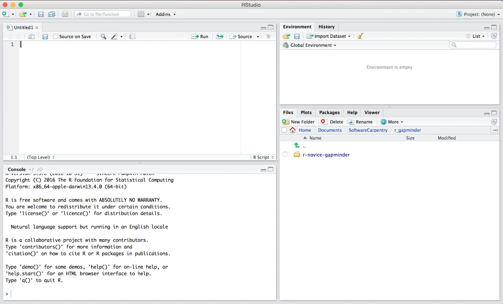
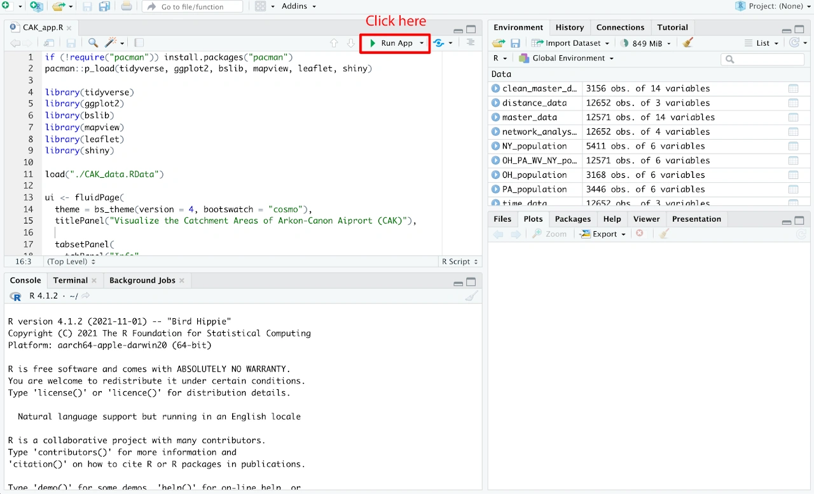
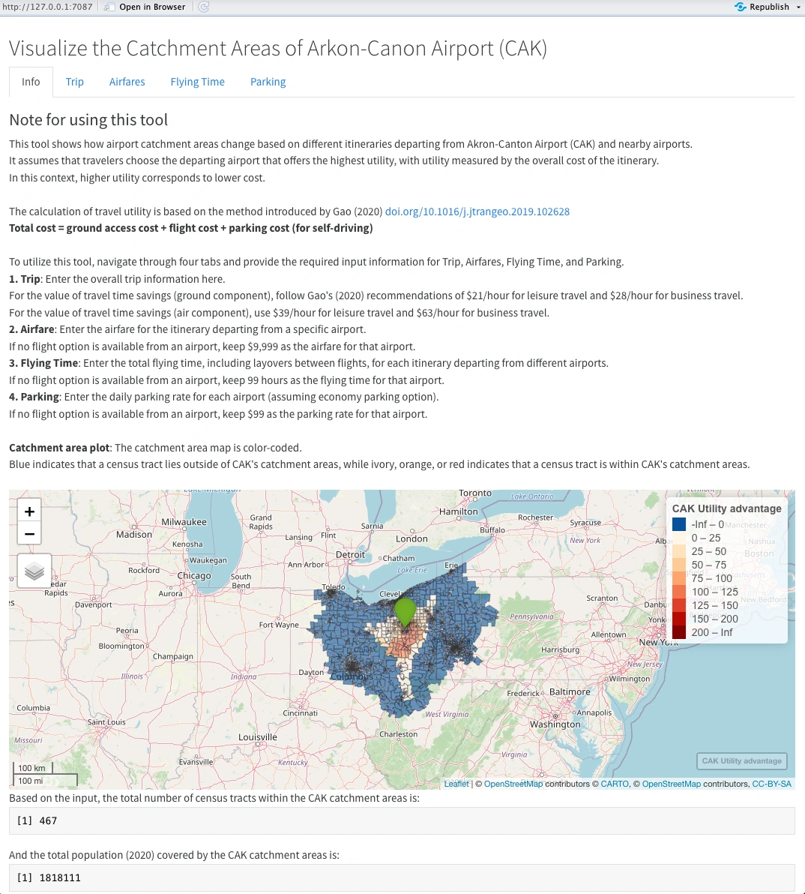
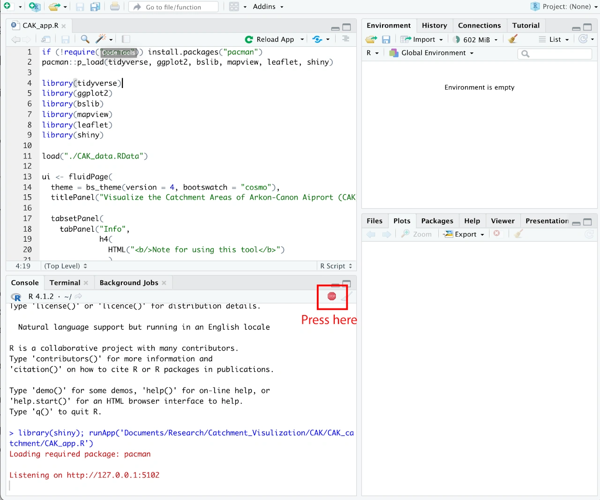

The Travel Utility Analysis tool is developed using the R Shiny package. This tutorial describes the process of deploying and running the tool on local machines, and also shares R source code for further customization.
On this page, we use Akron-Canton Airport (CAK), OH to demonstrate how to run the Travel Utility Analysis tool on your local computer.
Step 1: Install R & RStudio
Both R and RStudio are available for free. R is a programming language, and RStudio is an integrated development environment (IDE) designed to facilitate working with R. To get started, please follow these instructions to download and install the appropriate versions for your operating system (Windows, Mac, or Linux). It’s important to note that R should be installed before RStudio.
After successfully installing both R and RStudio, the user interface of RStudio will resemble Figure 1. Please note that the exact appearance may slightly vary depending on the version you have installed.

Figure 1. RStudio user interface
Step 2: Download & unzip the package “CAK_catchment”
Right click here to download the file.
After downloading, please unzip the package and save it to your desired local directory. The package contains two files: CAK_app.R and CAK_data.RData. It’s crucial to keep these two files in the same folder.
To provide further context, CAK_app.R is the R script file that you will run in RStudio at a later stage. CAK_data.RData is the data file that contains the necessary data frames for visualizing the catchment area of CAK.
Step 3: Run CAK_app.R
If R and RStudio are correctly installed, double-clicking the ‘CAK_app.R’ file should open it in RStudio. If you’re new to R, you may need to install a few packages before using this application. Fortunately, the ‘CAK_app.R’ script takes care of package installation automatically.
Once you have ‘CAK_app.R’ opened in RStudio, locate and click the ‘Run App’ button, as depicted in Figure 2.

Figure 2. Open and Run “CAK_app.R”
RStudio will automatically check if certain packages are installed. If any packages are missing, RStudio will install them automatically. This process may take 3-10 minutes to complete, depending on your local machine and internet connection. During the installation, RStudio may prompt you to confirm the installation of newer package versions. Please type ‘Yes’ to proceed.
Once all the required packages are installed, the Shiny application will automatically launch, and a page similar to Figure 3 will appear.

Figure 3. The interface of the Travel Utility Analysis tool for Akron-Canton Airport (CAK), OH
Step 4. Use the Travel Utility Analysis tool
With the Travel Utility Tool open in a browser page, users have the freedom to modify the values of input variables and observe real-time updates in the catchment area map of CAK airport.
The tool consists of five tabs. The first tab, labeled ‘Info,’ provides an overview of the tool along with essential background information. The remaining tabs, namely ‘Trip,’ ‘Airfares,’ ‘Flying Time,’ and ‘Parking,’ are designed to capture user inputs for variables that can influence travelers’ choice of departing airports. As these input values change, the attractiveness of the subject airport (in this case, CAK) to travelers will also change, thereby affecting the size and shape of the airport catchment area.
In the ‘Airfare,’ ‘Flying Time,’ and ‘Parking’ tabs, the input variables for competing airports are initially set at arbitrarily large numbers. This modeling approach intentionally reduces the attractiveness of those competing airports to a level where travelers are unlikely to select them as departure airports for their trips. Users are advised to maintain these default values for competing airports if they wish to exclude them from the analysis or if there are no flight options available at those airports. Users should provide input only for the subject airport and the competing airports they want to include in the analysis.
Step 5. Quit the Travel Utility Analysis tool
When you have finished using the Travel Utility Tool, there are two options for closing it. The first option is to simply close the browser page that displays the tabs and the airport catchment area map. The second option is to click the STOP button (refer to Figure 4) to interrupt R operations.
As mentioned earlier, the Travel Utility Analysis tool is developed using the Shiny package. When a Shiny app is running, RStudio continuously monitors user input to update the output in real-time. By interrupting R operations, you will end this process and exit the Travel Utility Analysis tool.

Figure 4. Quit R Shiny apps